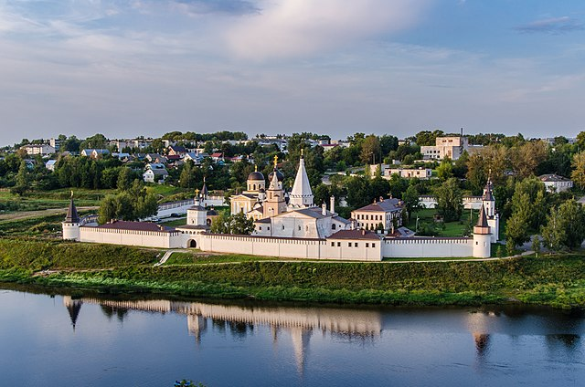

Приветствуем вас на сайте деревни Шиблино!
Добро пожаловать!
Деревня Шиблино расположена в Устиновском сельском поселении Кимрского района Тверской области на берегу живописной реки Малая Пудица.
Этот сайт создан на безвозмездной основе трудом энтузиастов и за их счёт.
Тверская область
 Тверская область (с 1935 по 1990 год — Калининская область) — субъект Российской Федерации. Входит в состав Центрального федерального округа, является частью Центрального экономического района. Тверская область — крупнейший регион Центральной России. Расположена в пределах Восточно-Европейской равнины. Граничит с Московской, Ярославской, Вологодской, Новгородской, Смоленской и Псковской областями. В составе Российской империи и РСФСР до 1929 года существовала Тверская губерния. 29 января 1935 года была образована Калининская область, с 1990 года область называется Тверской.... (читать полностью...)
Тверь
Тверь (с 1931 по 1990 год — Калинин) — город в России, административный центр Тверской области и Калининского района, в который не входит, являясь административно-территориальной единицей со статусом округа и городом областного значения, образующим одноимённое муниципальное образование городской округ город Тверь. Расположен на берегах реки Волги, в районе впадения в неё рек Тверцы и Тьмаки, в 177,6 км к северо-западу от Москвы. Тверь основана в 1135 году на стрелке реки Тьмаки. С 1247 года — центр Тверского княжества..... (читать полностью...)
Кимры
Третий блок
Кимрский район
Кимрский район образован 12 июля 1929 года в составе Кимрского округа Московской области. Площадь — 2514 км². Основные реки — Волга и Медведица с притоками Рудомошью, Малой Пудицей и Большой Пудицей.
- Район граничит:
- на севере — с Кашинским районом,
- на востоке — с Калязинским районом,
- на юге — с Московской областью, Талдомским городским округом и городским округом Дубна,
- на юго-западе — с Конаковским районом,
- на западе — с Калининским районом,
- на северо-западе — с Рамешковским районом.
Кимры

3
2
3
4
5